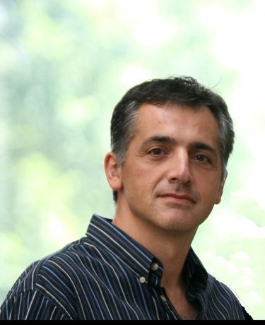

The principle of science, the definition, almost, is the following: The test of all knowledge is experiment. Experiment is the sole judge of scientific 'truth'. But what is the source of knowledge? Where do the laws that are to be tested come from? Experiment, itself, helps to produce these laws, in the sense that it gives us hints.
My research aims to improve observability in networked systems at scale — enhancing our ability to measure and characterize both their behavior and the critical infrastructure they depend on. With this visibility, I work to expose systemic risks, improve Internet resilience, and inform the design of more robust, efficient, and transparent systems. Current areas include Internet resilience, digital sovereignty, submarine cable infrastructure, DNS privacy, and content delivery.
I lead the AquaLab research group at Northwestern. See the group site for our full publication list, current and former group members, and news.
Fabián E. Bustamante is a Professor of Computer Science at Northwestern University and Co-founder and Chief Science Officer at Kealu, Inc. Previously, he was Director of Research at Phenix Real Time Solutions (2016–2024), a Chicago-based startup specializing in real-time video streaming at scale.
He earned his M.Sc. and Ph.D. in Computer Science from the Georgia Institute of Technology. Prior to that, he studied and taught at Universidad Nacional de La Patagonia San Juan Bosco (Argentina), where he earned both a 3-year and 5-year degree in computer science.
His group has released numerous open-source systems, collectively used by over 1.5 million people. Fabián is a senior member of ACM and IEEE, and a recipient of the NSF CAREER Award, multiple Google Faculty Research Awards, and the Science Foundation of Ireland's E.T.S. Walton Visitor Award.
{kind=link}
{kind=link}